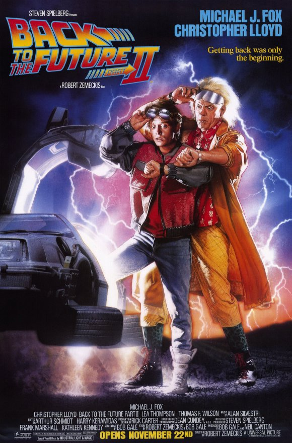
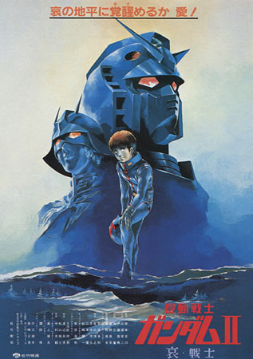
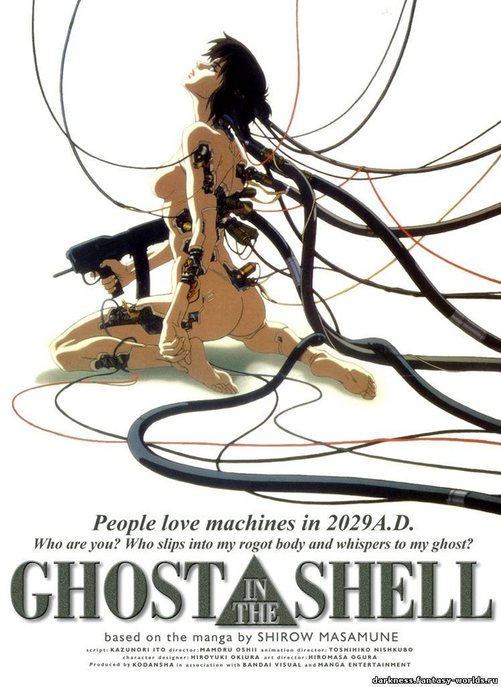
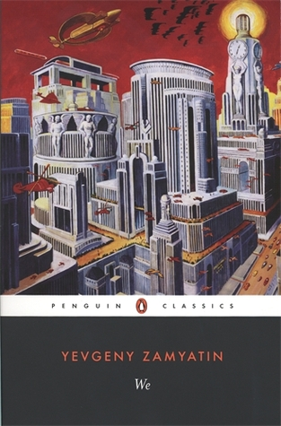

Fictional properties have always fascinated me, since the possibilities are endless. In things like novels and movies, creators can come up with amazing worlds and concepts. My favorite genre in fiction is science fiction, in which stories generally take place in the future. The thing I like about this genre is that most of the time, the works include an imagining of the future and every creator's imagination presents different ideas. In this site, I will present different depictions of future in fiction across three different mediums: movies, anime(Japanese animation) and novels. All the titles I have selected present a unique vision of the future. You can see these titles below with each work's synopsis. If you click on a poster, you will be directed to that work's page. If you click on the site's logo from any page, you will be redirected to the home page.
|  | Marty McFly has only just gotten back from the past, when he is once again picked up by Dr. Emmett Brown and sent through time to the future. Marty's job in the future is to pose as his own son to prevent him from being thrown in prison. Unfortunately, things get worse when the future changes the present.
Poster and synopsis are taken from IMDB |
 |
In the 21st century, a corporation develops human clones to be used as slaves in colonies outside the Earth, identified as replicants. In 2019, a former police officer is hired to hunt down a fugitive group of clones living undercover in Los Angeles.
Poster and synopsis are taken from IMDB |
|  | In the future, with Earth's population rapidly increasing, humanity has developed giant orbiting space colonies gathered in clusters known as "Sides." As the elites on Earth force most of the populace into space, rebellion begins to brew. In the year Universal Century 0079, one of the colony clusters known as Side 3 declares itself the Principality of Zeon and launches a war of independence against the Earth Federation.
Despite having only a fraction of the resources of the Federation, Zeon quickly gains the upper hand in the conflict through the use of giant humanoid robots called mobile suits. Chief among Zeon's mobile suit ace pilots is Char Aznable, a mysterious masked man known as the "Red Comet." When Char's squadron comes across the Federation developing its own prototype mobile suit called Gundam in the colony Side 7, his men launch a brutal attack. Amuro Ray, the son of the prototype's developer, gets in the Gundam and is able to fend off the Zeon attack. As Amuro soon finds himself directly in conflict with Char, he is forced to flee the colony on a Federation ship.
Poster and synopsis are taken from MyAnimeList. |
| Spike Spiegel is a bounty hunter in the far future with an easy going attitude and some deadly skill at martial arts. Together with his partners, Jet Black, and later Faye Valentine as well, they go from job to job across the galaxy looking for the high priced fugitives to bag.
Synopsis is taken from IMDB Poster is taken from Reelgood |
|  | It is the year 2029. Technology has advanced so far that cyborgs are commonplace. In addition, human brains can connect to the internet directly. Major Motoko Kasunagi is an officer in Section 9, an elite, secretive police division that deals with special operations, including counter terrorism and cyber crime. She is currently on the trail of the Puppet Master, a cyber criminal who hacks into the brains of cyborgs in order to obtain information and to commit other crimes. Poster and synopsis are taken from MyAnimeList. |
|  | In a glass-enclosed city of absolute straight lines, ruled over by the all-powerful 'Benefactor', the citizens of the totalitarian society of OneState live out lives devoid of passion and creativity - until D-503, a mathematician who dreams in numbers, makes a discovery: he has an individual soul. Synopsis taken from GoodReads |
Below, you can see each title's release date and the imagined year in the future.
| Fictional Work | Release Year | Fictional Year |
|---|---|---|
| Back to the Future 2 | 1989 | 2015 |
| Blade Runner | 1982 | 2019 |
| Mobile Suit Gundam | 1981 | UC 0079 |
| Cowboy Bebop | 1998 | 2071 |
| Ghost in the Shell | 1995 | 2029 |
| We | 1924 | 26th Century |